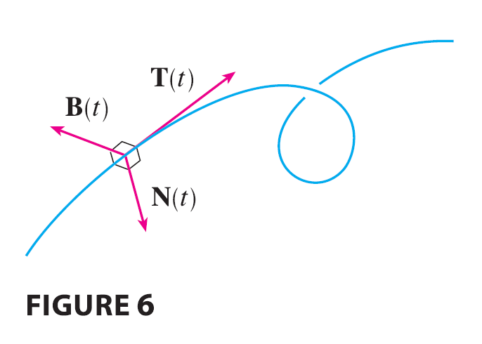

At a given point on a smooth space curve \(\mathbf{r}(t)\), there are many vectors that are orthogonal to the unit tangent vector \(\mathbf{T}(t)\). We single out one by observing that, because \(|\mathbf{T}(t)|=1\) for all \(t\), we have \(\mathbf{T}(t) \cdot \mathbf{T}'(t) = 0\) by Example 13.2.4, so \(\mathbf{T}'(t)\) is orthogonal to \(\mathbf{T}(t)\). Note that, typically, \(\mathbf{T}'(t)\) is itself not a unit vector. But at any point where \(\kappa \neq 0\) we can define the principal unit normal vector \(\mathbf{N}(t)\) (or simply unit normal) as \[ \mathbf{N}(t) = \frac{\mathbf{T}'(t)}{|\mathbf{T}'(t)|} \] We can think of the unit normal vector as indicating the direction in which the curve is turning at each point. The vector \(\mathbf{B}(t) = \mathbf{T}(t) \times \mathbf{N}(t)\) is called the binormal vector. It is perpendicular to both \(\mathbf{T}\) and \(\mathbf{N}\) and is also a unit vector. (See Figure 6.)

EXAMPLE 6 Find the unit normal and binormal vectors for the circular helix \[ \mathbf{r}(t) = \cos t \mathbf{i} + \sin t \mathbf{j} + t \mathbf{k} \]
The plane determined by the normal and binormal vectors \(\mathbf{N}\) and \(\mathbf{B}\) at a point P on a curve C is called the normal plane of C at P. It consists of all lines that are orthogonal to the tangent vector \(\mathbf{T}\). The plane determined by the vectors \(\mathbf{T}\) and \(\mathbf{N}\) is called the osculating plane of C at P. The name comes from the Latin osculum, meaning “kiss.” It is the plane that comes closest to containing the part of the curve near P. (For a plane curve, the osculating plane is simply the plane that contains the curve.)
The circle that lies in the osculating plane of C at P, has the same tangent as C at P, lies on the concave side of C (toward which \(\mathbf{N}\) points), and has radius \(\rho = 1/\kappa\) (the reciprocal of the curvature) is called the osculating circle (or the circle of curvature) of C at P. It is the circle that best describes how C behaves near P; it shares the same tangent, normal, and curvature at P.
EXAMPLE 7 Find equations of the normal plane and osculating plane of the helix in Example 6 at the point \(P(0, 1, \pi/2)\).
EXAMPLE 8 Find and graph the osculating circle of the parabola \(y=x^2\) at the origin.